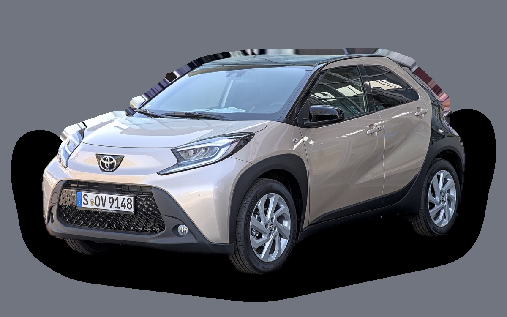
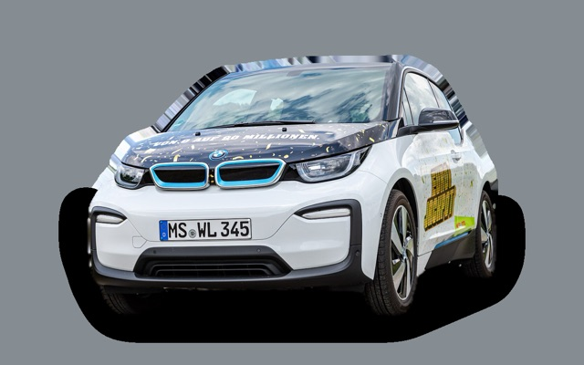
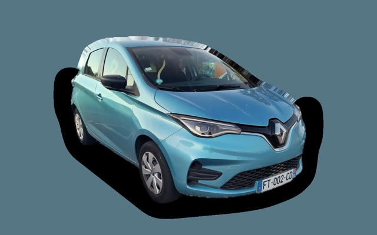
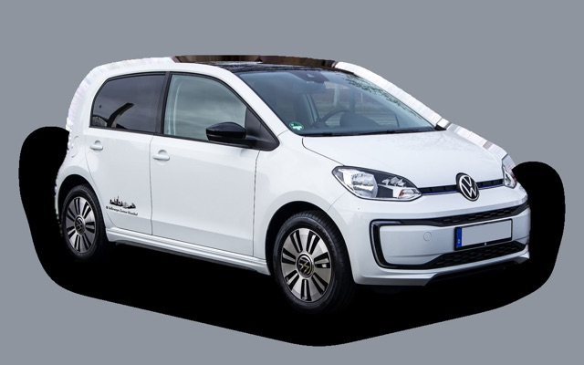
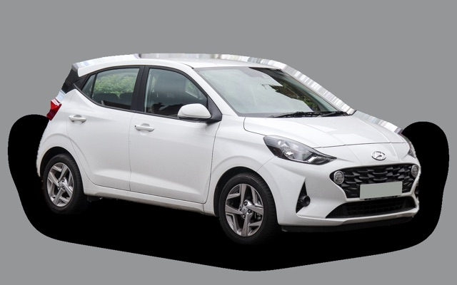
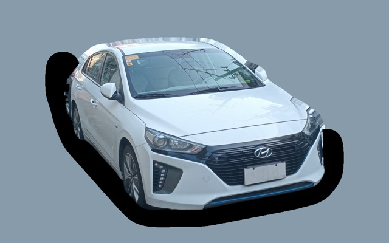
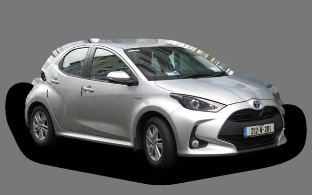

What does a Toyota Aygo X cost per month?
A 2023 Toyota Aygo X costs about SEK 2,386 a month, all in.


Monthly cost by model year
| Model year | Version in the calculation | Price | Per month | Grade |
|---|---|---|---|---|
| 2026 | 1.0 72 manuell, Active | SEK 186,900 | SEK 2,971 | E |
| 2023 | 1.0 72 manuell, Active | SEK 145,000 | SEK 2,386 | D |
Based on 5 years of ownership and 12,500 km a year, with fuel prices from 2026-10-22. The monthly cost includes depreciation, fuel, servicing and repairs, insurance and road tax.
How the cost splits for a 2023 car
- Depreciation: SEK 726/mo
- Fuel: SEK 1,056/mo
- Servicing and repairs: SEK 261/mo
- Insurance: SEK 308/mo
- Road tax: SEK 35/mo
Lease or buy new?
Toyota Easy Privatleasing offers the Aygo X Hybrid Active from SEK 2,995 a month for 36 months and 15,000 km a year. Here is what that costs compared with buying the same car new for SEK 230,300 and selling it after 36 months, at 12,500 km a year and 5 percent interest.
Buying is cheaper SEK 464 less a month, SEK 16,704 over 36 months.
| Per month | Lease | Buy |
|---|---|---|
| Lease payment, 12,500 km a year | SEK 2,995 | – |
| Set-up and invoice fees | SEK 81 | – |
| Depreciation | – | SEK 1,536 |
| Interest on the money, 5% | – | SEK 844 |
| Servicing and repairs | included | SEK 232 |
| Fuel | SEK 840 | SEK 840 |
| Insurance | SEK 413 | SEK 413 |
| Road tax | SEK 168 | SEK 168 |
| Total per month | SEK 4,498 | SEK 4,034 |
| Total over 36 months | SEK 161,928 | SEK 145,224 |
The offer is for 15,000 km a year. Driving less doesn't lower the payment. Toyota Easy Privatleasing: Aygo X Hybrid Active, 36 months, 15,000 km a year, servicing included, fixed payment. Set-up fee SEK 795 and invoice fee SEK 59 a month (estimated, the offer doesn't state them). Source: toyota.se, read on 26 October 2026, valid until 11 January 2027.
Buying: SEK 230,300 for a new car in the same version, and SEK 175,006 back when you sell it after 3 years. The residual value is based on ad prices for 3-year-old cars, adjusted because you drive 37,500 km in 3 years instead of the typical 40,000 km. The interest is what the money costs: interest on a car loan, or the interest you miss on savings. Fuel, insurance and tax are the same either way. Excess mileage and abnormal wear are charged when you hand back a leased car, and trading in a car you own at a dealer usually gets you less than the ad price.
Calculate with your own distance and interest · All lease cars compared
Used prices in ads
| Model year | Median price | Ads | Typical mileage |
|---|---|---|---|
| 2026 | SEK 223,900 | 22 | 10,000 km |
| 2025 | SEK 189,000 | 11 | 13,000 km |
| 2024 | SEK 189,000 | 10 | 19,000 km |
| 2023 | SEK 168,900 | 7 | 36,000 km |
| 2022 | SEK 139,900 | 7 | 50,000 km |
The median price in Swedish ads by model year in October 2026 (source: Blocket, AutoUncle). Ad prices are asking prices, and the final price may be lower.
Engines and versions
| Engine | Fuel | Power | 0–100 km/h | Consumption (WLTP) | Range | Model years | Extra cost |
|---|---|---|---|---|---|---|---|
| 1.0 72 manuell | Petrol | 72 hp | 14.9 s | 4.9 l/100 km | – | 2022– | – |
| 1.0 72 automat | Petrol | 72 hp | 15.6 s | 5.2 l/100 km | – | 2022– | +SEK 25,900 |
| Hybrid 116 | Hybrid | 116 hp | 9.5 s | 3.9 l/100 km | – | 2025– | +SEK 45,000 |
- Trim: Active, Style (+SEK 25,900)
Facts
- Body
- Hatchback
- Model years
- 2022–
- New from
- SEK 186,900
- Boot
- 231 litres
- Euro NCAP
- 4 of 5 stars
- New-car warranty
- 10 years
- Reliability
- 5 of 5
- Comprehensive insurance, estimate
- SEK 4,500/yr
- Servicing, estimate
- SEK 2,700/yr
Common faults to watch for
- Electric water pump (hybrid), repair about SEK 6,000
- Hybrid battery cells fail, repair about SEK 25,000
- Rusty brake and fuel lines, repair about SEK 5,500
The faults apply to some engines and model years. The calculator works out the risk for the exact version you choose.
Pros and cons
Pro
The cheapest Toyota, with a ten-year warranty.
Con
Small and underpowered on the motorway.
Similar cars

BMW i3SEK 2,379/mo as a 2019 model
Renault ZoeSEK 2,364/mo as a 2021 model
Volkswagen up!SEK 2,415/mo as a 2020 model
Hyundai i10SEK 2,446/mo as a 2023 model
Hyundai IoniqSEK 2,315/mo as a 2019 model
Toyota YarisSEK 2,562/mo as a 2023 model
Updated 2026-10-27 · ad data Oct 2026